Documentação completa: por que implantar, o que o portal faz, como ele protege a organização e como colocá-lo para funcionar no seu Microsoft 365 e na sua assinatura Azure.
O Portal de Provisionamento transforma a entrada e a saída de colaboradores no Microsoft 365 em um processo único, aprovado e registrado: o RH pede, outra pessoa aprova e o portal executa cada etapa no momento certo — sem senhas trafegando e sem acessos esquecidos.
Em muitas empresas, criar a conta de quem está chegando e remover os acessos de quem está saindo depende de e-mails, planilhas e da memória de alguém da TI. Isso gera contas criadas antes da hora, senhas enviadas por mensagem, licenças pagas sem uso e ex-colaboradores com acesso depois do último dia. O portal resolve esses pontos com um fluxo padronizado:
O projeto é open source (licença MIT) e genérico: cada organização implanta no próprio Microsoft 365 e na própria assinatura Azure. Nenhum dado de cliente fica no repositório.
A conta no Microsoft 365 é a porta de entrada para e-mail, arquivos, Teams e, muitas vezes, para outros sistemas da empresa. Quando a criação e a remoção dessa conta são manuais, os mesmos problemas aparecem em quase toda organização:
| Situação comum | Consequência |
|---|---|
| Conta criada e ativada dias antes da admissão | Uma conta válida, sem dono ativo, fica exposta a ataques; a licença já está sendo paga. |
| Senha inicial enviada por e-mail ou mensagem | Qualquer pessoa com acesso à mensagem entra na conta antes do colaborador; o MFA ainda não existe. |
| Pedido feito por e-mail ou planilha | Sem aprovação formal, sem histórico, com erros de digitação no nome e no login. |
| Grupos e acessos escolhidos "de cabeça" | Cada novo colaborador recebe acessos diferentes para a mesma função; acessos a mais passam despercebidos. |
| Desligamento depende de lembrar | Ex-colaboradores continuam com e-mail no celular, Teams aberto e acesso a arquivos depois do último dia. |
| Nenhum registro de quem fez o quê | Em uma auditoria ou incidente não há como provar quem pediu, quem aprovou e quando a conta foi bloqueada. |
| Dados pessoais guardados para sempre | Planilhas e e-mails com nome, matrícula e cargo ficam indefinidamente, contrariando a LGPD. |
O portal é um site interno, com login pela conta corporativa do Microsoft 365. Ele centraliza os pedidos do RH, a aprovação e a execução, que é feita automaticamente pelo próprio portal no Microsoft 365.
Conta desativada até o dia certo, nenhum segredo guardado, MFA cadastrado pelo próprio colaborador.
Quem pede não aprova. Os dados são conferidos de novo no Microsoft 365 no momento da decisão.
Histórico em cada solicitação e trilha de auditoria somente de acréscimo, exportável para Excel.
O portal não é só uma forma mais rápida de criar contas. Ele muda quando e como cada acesso existe, o que reduz riscos reais de segurança, de custo e de conformidade.
| Tema | Sem o portal | Com o portal |
|---|---|---|
| Conta antes da admissão | Ativa dias antes, com senha conhecida por terceiros | Existe, mas desativada; só é ativada no dia da admissão |
| Senha inicial | Definida pela TI e enviada por mensagem | Não existe: o gestor entrega um código de uso único e o colaborador cria a própria senha |
| MFA | Configurado "depois", quando alguém lembra | Cadastrado no primeiro acesso, com o código temporário |
| Licenças | Pagas desde a criação da conta | Atribuídas só na véspera da admissão e removidas no desligamento |
| Acessos por função | Escolhidos a cada pedido | Perfis de onboarding padronizados, validados pelo administrador |
| Desligamento | Depende de alguém lembrar; horário incerto | Agendado para o último dia, no horário definido, com sessões encerradas |
| Aprovação | Informal ou inexistente | Obrigatória, por outra pessoa, com comentário e histórico |
| Rastreabilidade | E-mails espalhados | Trilha de auditoria com quem, o quê e quando |
| LGPD | Dados pessoais guardados sem prazo | Retenção configurável, anonimização automática e aviso de privacidade |
Pede admissões e desligamentos sozinho, em um formulário que valida os dados e mostra o login que será criado. Acompanha o andamento sem precisar cobrar a TI.
Deixa de digitar contas e de lembrar desligamentos. Aprova com um clique, com os dados conferidos no Microsoft 365. Sabe exatamente quais acessos cada perfil concede.
Recebem o novo colaborador no primeiro dia com um código de acesso gerado por eles mesmos, na hora certa, sem depender da TI.
Têm evidência de cada decisão (quem pediu, quem aprovou, quando foi executado), segregação de funções e política de retenção de dados pessoais.
O portal roda em serviços simples do Azure. Em laboratório, o plano gratuito do App Service é suficiente e os demais recursos custam centavos por mês. Em produção, recomenda-se um plano pago básico (B1 ou superior) para ficar sempre disponível. Não há licença do portal: o código é livre. A economia com licenças do Microsoft 365, atribuídas só na véspera e removidas no desligamento, tende a superar o custo da infraestrutura.
O acesso é controlado por papéis do Microsoft Entra ID, atribuídos a grupos. Para dar ou tirar acesso, basta incluir ou remover a pessoa do grupo correspondente — nada é configurado no portal.
| Papel | Quem normalmente é | O que pode fazer |
|---|---|---|
| Solicitante | RH | Pedir admissões e desligamentos; acompanhar e cancelar os próprios pedidos. |
| Aprovador | TI / Segurança | Aprovar ou rejeitar pedidos feitos por outras pessoas (com comentário obrigatório na rejeição). |
| Administrador | Responsável pelo portal | Painel, todas as solicitações, perfis de onboarding, recursos do Microsoft 365, auditoria e privacidade; reprocessar etapas. |
| Gestor | Qualquer gestor da empresa | Não é um papel: todo gestor registrado em uma admissão vê a sua equipe em Minha equipe e gera o código de acesso inicial. |
| Agendador | O próprio sistema | Papel exclusivo da identidade do agendador (não de pessoas); executa licenças, ativações e desligamentos de hora em hora. |
A página inicial mostra os papéis da pessoa, os atalhos para Novo colaborador e Desligamento e avisos do que precisa de atenção, como aprovações pendentes e colaboradores que começam hoje.
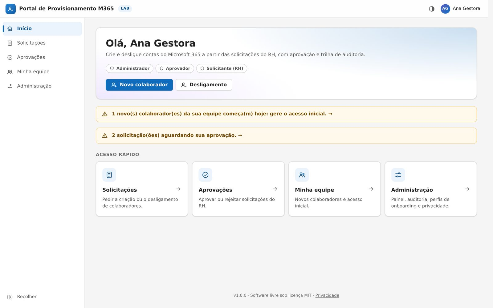
O RH informa nome, sobrenome, matrícula, tipo de colaborador, cargo, departamento, local, data de admissão, perfil de onboarding e gestor. O gestor é escolhido por uma busca no diretório da empresa — não é digitado —, o que evita erros.
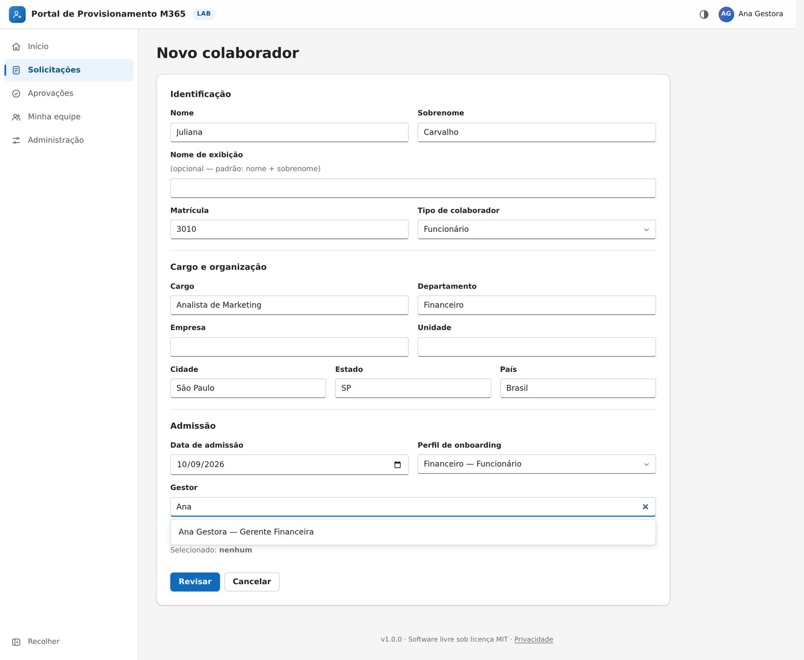
Antes de enviar, o portal mostra exatamente o que será criado: nome de exibição, login, e-mail, grupos, licença e a linha do tempo. Nesse momento ele já:
nome.sobrenome), remove acentos e trata partículas como "da" e "dos";joao.silva já existe em um usuário, grupo, e-mail ou apelido, sugere joao.silva2;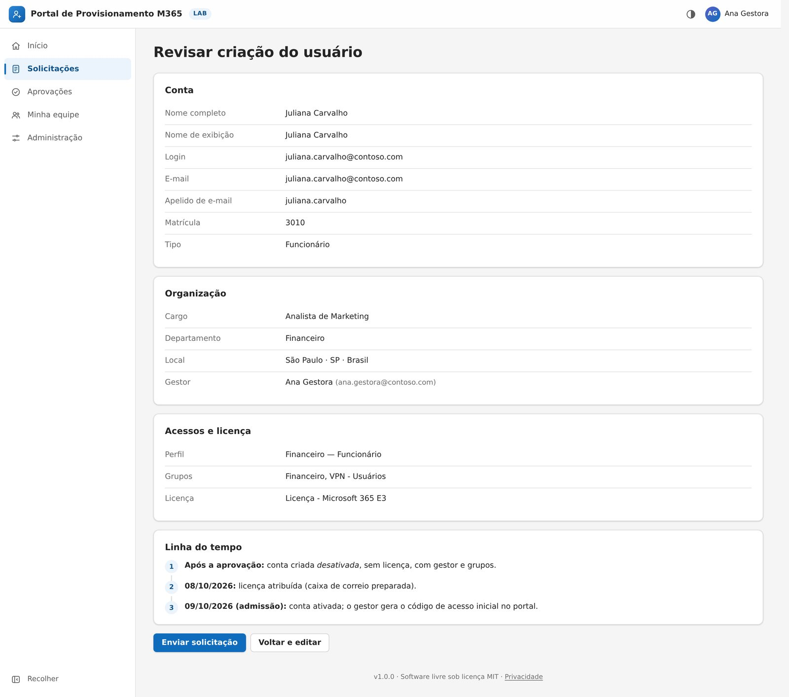
| Quando | O que acontece | Situação |
|---|---|---|
| Envio | A solicitação recebe um número (REQ-AAAAMMDD-NNNN) e aguarda aprovação. | Aguardando aprovação |
| Aprovação | Conta criada desativada, sem licença, com gestor, matrícula, data de admissão e grupos de acesso do perfil. A senha gerada é aleatória e descartada: ninguém a conhece. | Conta criada |
| Véspera da admissão | A conta entra no grupo de licença (ou recebe a licença direta). A caixa de e-mail é preparada. | Licenciada |
| Dia da admissão | A conta é ativada. O gestor já pode gerar o código de acesso inicial. | Ativa |
O agendador roda de hora em hora e é idempotente: rodar de novo não duplica nada. Se uma etapa falhar (por exemplo, falta de licenças), a solicitação fica em Falha parcial, o que já foi feito é mantido e a etapa é tentada de novo na próxima hora.
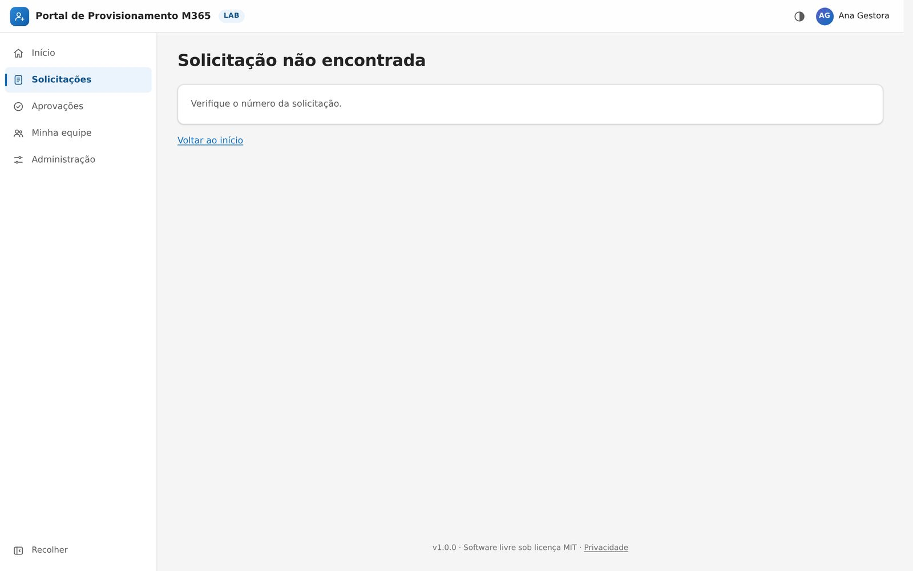
A fila de aprovação mostra o que aguarda decisão e o que foi decidido recentemente. Pedidos feitos pelo próprio aprovador aparecem na lista, mas não podem ser aprovados por ele.
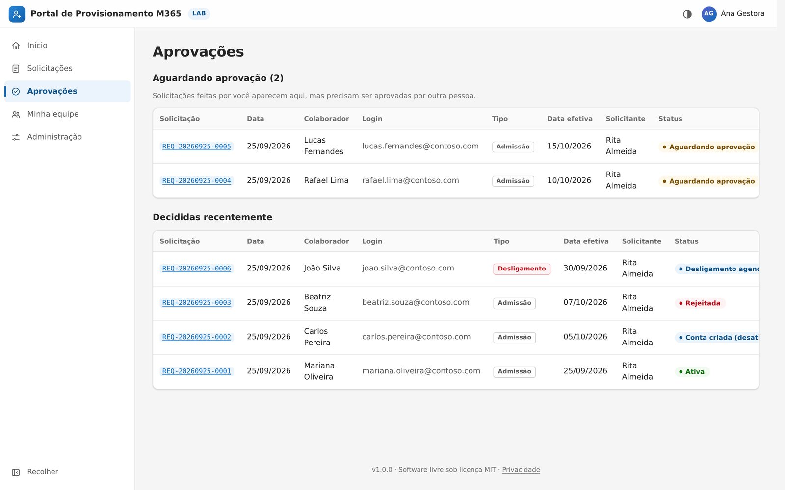
No dia da admissão, o gestor entra em Minha equipe e clica em Gerar acesso inicial. O portal cria no Microsoft 365 um código de acesso temporário (Temporary Access Pass), de uso único e com validade limitada. O código:
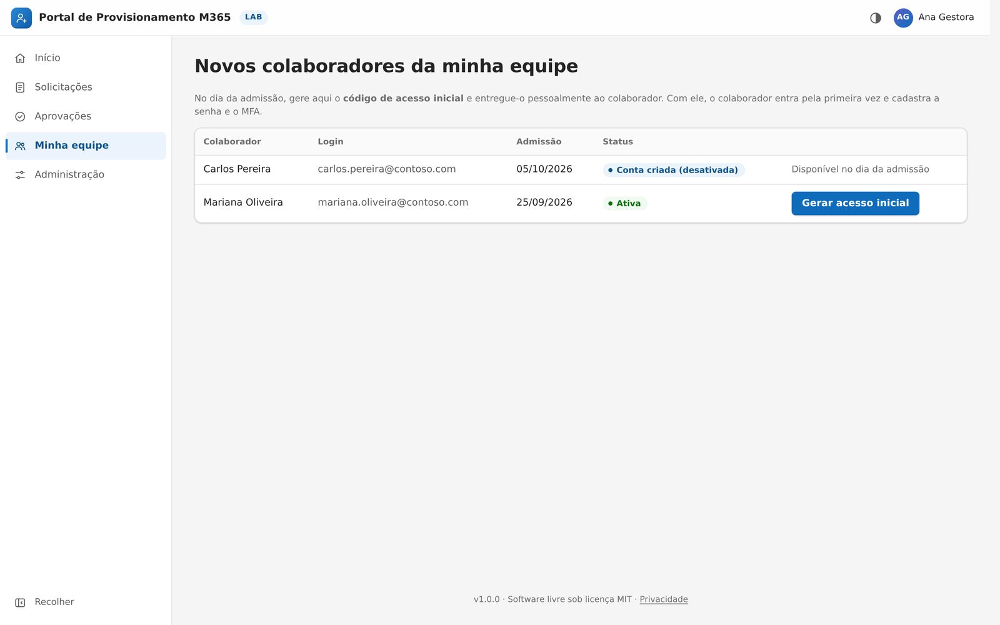
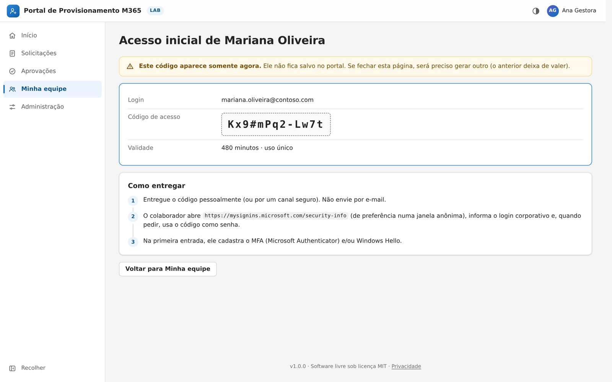
O colaborador acessa mysignins.microsoft.com/security-info, informa o login corporativo, usa o código quando o sistema pedir a senha e, nessa primeira entrada, cadastra o MFA (Microsoft Authenticator) e/ou o Windows Hello. A partir daí, ninguém além dele conhece suas credenciais.
O RH escolhe o colaborador na busca do diretório (inclusive contas já desativadas), informa o último dia de trabalho e, se necessário, marca bloquear imediatamente. A revisão mostra os acessos atuais que serão removidos e as ações que precisarão ser feitas à mão.
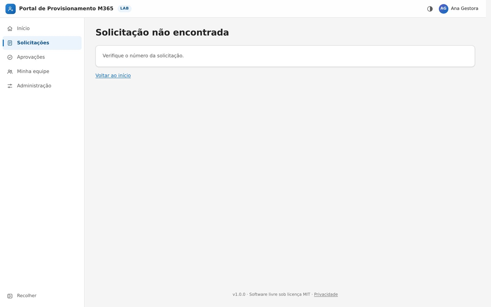
Algumas situações não podem ou não devem ser feitas automaticamente. O portal as registra na solicitação como Ação manual:
| Situação | Por quê |
|---|---|
| Grupos dinâmicos | A participação vem de uma regra; ajuste a regra ou os dados do usuário. |
| Listas de distribuição | São gerenciadas pelo Exchange. |
| Grupos ou funções administrativas | Exigem privilégio de administrador, que o portal propositalmente não recebe. |
| Subordinados diretos | O portal não altera o gestor de outras pessoas; o RH define o novo gestor. |
Reúne o que o administrador precisa ver todos os dias: pedidos aguardando aprovação, em andamento e com falha, admissões e desligamentos dos próximos 7 dias, a última execução do agendador, as licenças disponíveis (com alerta quando estão acabando) e a atividade recente.
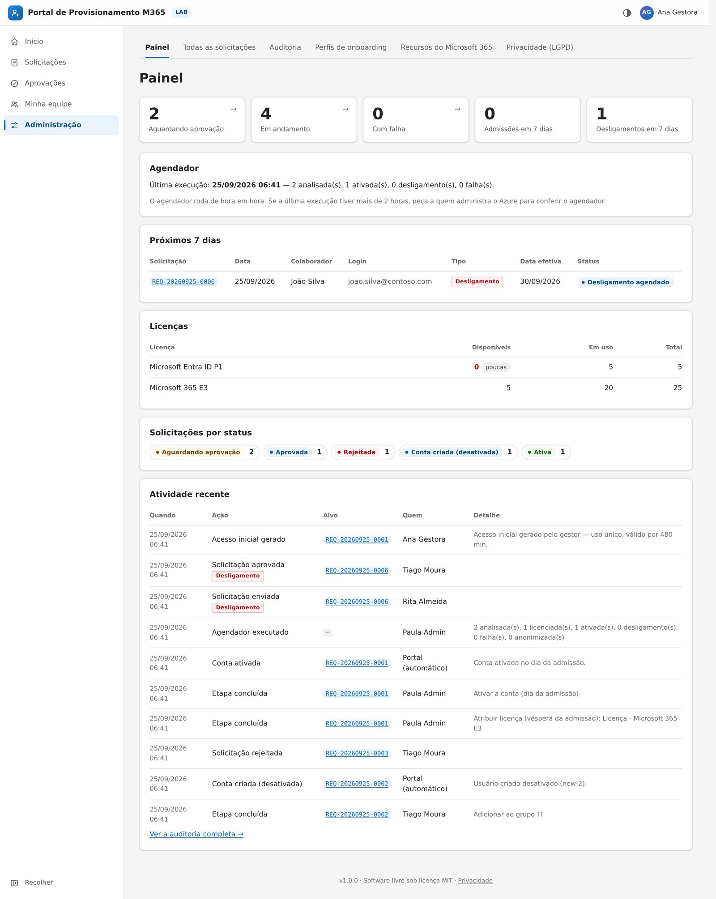
Lista completa com filtros por situação, o botão Executar ciclo de vida agora (que faz na hora o que o agendador faria na próxima execução) e, em cada solicitação com falha, o botão Reprocessar etapas pendentes.
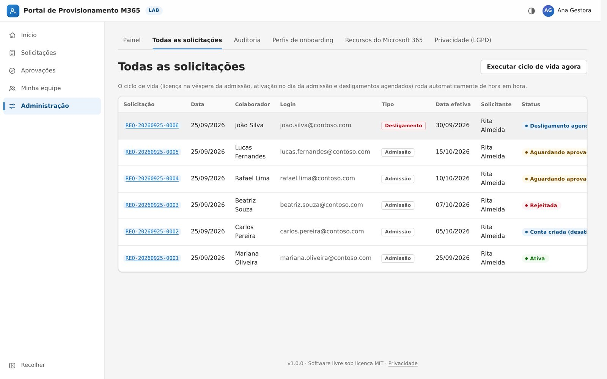
Cada perfil define os grupos de acesso e a licença de uma função (por exemplo, "Financeiro — Funcionário"). O RH só escolhe o perfil; nunca escolhe grupos. Ao salvar um perfil, o portal confere no Microsoft 365 que cada grupo existe, é de segurança, não é dinâmico, não concede funções administrativas e não é um grupo de papel do próprio portal.
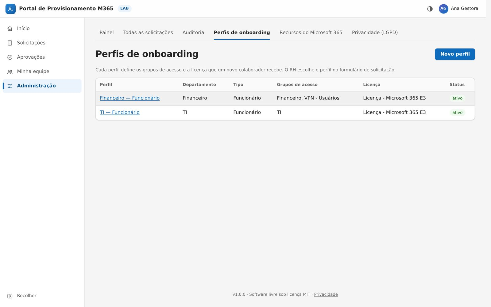
Mostra o que a organização tem disponível e como o portal está configurado: domínios verificados, recursos (Entra ID P1/P2, Governance, Exchange Online, código de acesso temporário), licenças com unidades livres e quais grupos podem ser usados em perfis. Bloqueios e avisos de configuração aparecem em destaque.
Toda mudança em solicitações e perfis gera eventos automaticamente: envio, aprovação, rejeição, cancelamento, criação, licença, ativação, desligamento, cada etapa, geração do código de acesso (sem o código), alterações de perfis, execuções do agendador, anonimizações e exportações.
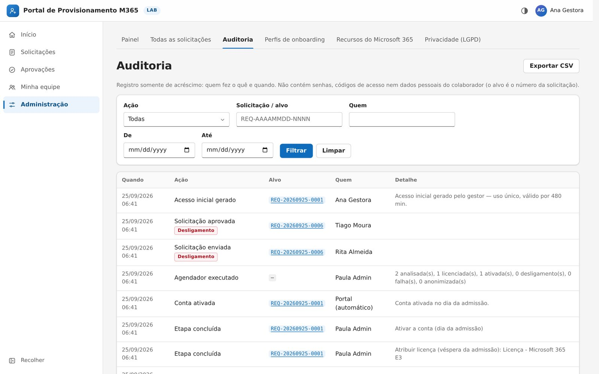
A interface segue o visual do Microsoft 365, com menu lateral, tema claro e escuro (automático, conforme o sistema operacional, ou escolhido pelo usuário) e adaptação para celular. O texto é em português simples, sem termos técnicos; informações para quem administra o Azure ficam recolhidas. As cores atendem ao contraste mínimo de acessibilidade (WCAG AA), é possível navegar pelo teclado e há atalho para pular direto ao conteúdo.
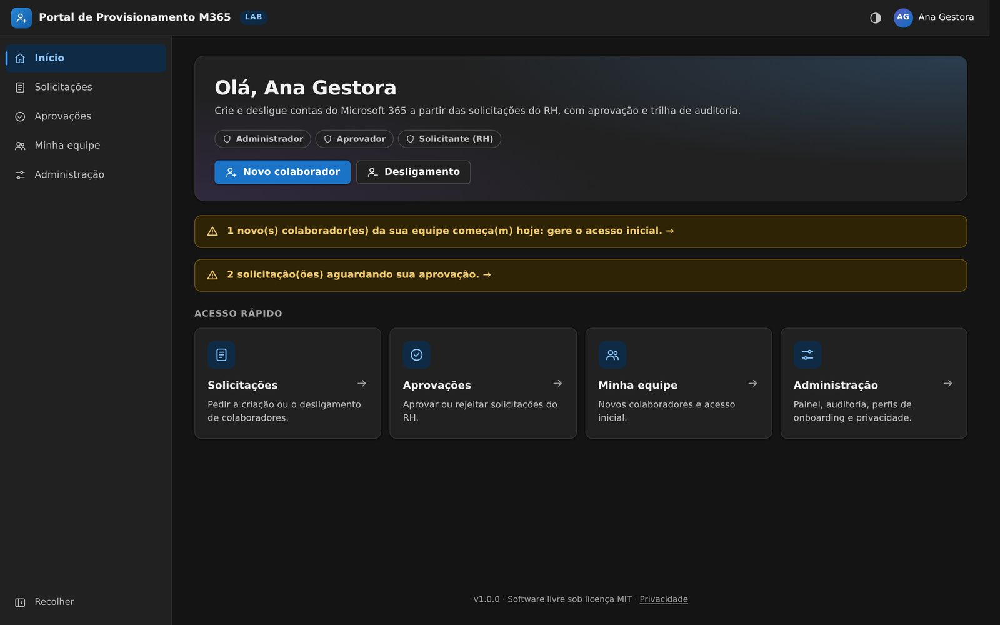
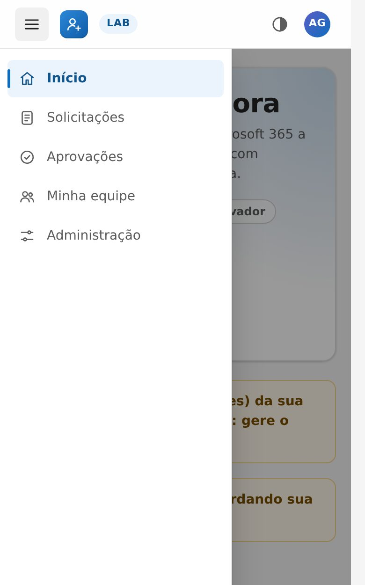
O portal é uma aplicação web em Python (FastAPI) hospedada no Azure App Service. Todas as chamadas ao Microsoft 365 passam pelo Microsoft Graph usando uma Managed Identity, uma identidade do Azure que não tem senha nem segredo.
| Componente | Papel |
|---|---|
| App Service (Linux, Python) | Hospeda o portal. O login é feito pelo próprio App Service com o Entra ID (somente contas da organização). |
| Managed Identity | Identidade do portal para o Microsoft Graph e o Storage. Sem senha, sem certificado, sem segredo a renovar. |
| Azure Table Storage | Solicitações, perfis, auditoria e estado do agendador. Acesso só pela identidade (chaves de acesso desativadas). |
| Logic App | Agendador: chama o portal de hora em hora para licenças, ativações, desligamentos e anonimização. |
| Application Insights / Log Analytics | Monitoramento e logs técnicos, com limite diário de ingestão e sem dados sensíveis. |
| GitHub Actions | Testa cada mudança e publica no Azure com login federado (OIDC), sem segredo guardado no GitHub. |
O portal tem permissões fortes no Microsoft 365 — ele cria contas e remove acessos. Por isso, a segurança foi desenhada em camadas.
| Proteção | Como funciona |
|---|---|
| Modo simulação | Ligado por padrão: nada é alterado no Microsoft 365 até o administrador desligá-lo conscientemente. |
| Limite diário de contas | Evita criação em massa por erro ou abuso. |
| Proteção contra CSRF | Formulários com token e verificação de origem. |
| Cabeçalhos de segurança | CSP restritiva (nenhum script ou estilo externo ou embutido), HSTS, bloqueio de iframe, nosniff, sem cache. |
| Validação de entrada | Limites de tamanho e caracteres proibidos em todos os campos que chegam ao Microsoft 365. |
| Idempotência e concorrência | Reenvios não duplicam; gravações com controle de versão; a execução do desligamento é reservada antes de escrever. |
| Dependências e segredos | A cada mudança, o CI roda lint, mais de 330 testes automatizados com cobertura mínima de 85%, auditoria de dependências, varredura de segredos (gitleaks) e análise de código CodeQL. A v1.0 passou por uma revisão de segurança de ponta a ponta (docs/SEGURANCA.md). |
As permissões do Microsoft Graph são concedidas à Managed Identity por nível, com o script Set-GraphPermissions.ps1, que mostra o plano e só aplica após a confirmação SIM. Cada nível inclui os anteriores; o script nunca remove permissões.
| Nível | Permissões | Para quê |
|---|---|---|
| leitura | User.Read.All, Group.Read.All, Organization.Read.All, Domain.Read.All, Policy.Read.AuthenticationMethod | Buscar gestores, verificar logins, listar grupos, licenças e domínios. Não altera nada. |
| criacao | User.ReadWrite.All, User-LifeCycleInfo.ReadWrite.All, GroupMember.ReadWrite.All | Criar a conta desativada, definir gestor e datas, incluir nos grupos. |
| ciclo-de-vida | User.EnableDisableAccount.All, UserAuthenticationMethod.ReadWrite.All (LicenseAssignment.ReadWrite.All só com licença direta) | Ativar a conta no dia da admissão e gerar o código de acesso inicial. |
| desligamento | User.RevokeSessions.All | Encerrar as sessões ativas no desligamento. |
O login dos usuários usa um App Registration separado, só com User.Read (delegada). Revise periodicamente em Entra → Aplicativos empresariais → Identidades gerenciadas.
| Item | Mínimo |
|---|---|
| Microsoft Entra ID | Free para o essencial; P1 recomendado (licença por grupo e atribuição de papéis a grupos); Governance opcional. |
| Microsoft 365 | Somente nuvem (sem sincronização com Active Directory local). |
| Azure | Qualquer assinatura, com permissão de Owner para criar as atribuições da identidade. |
| Quem implanta | Administrador Global (ou Administrador de Aplicativos + Grupos) para o login e as permissões. |
| Ferramentas | PowerShell 5.1 ou 7+, Azure CLI com Bicep, Python 3.11+, Git e GitHub CLI. |
Todos os scripts são idempotentes (podem rodar de novo), mostram uma pré-visualização e só aplicam após você digitar SIM. Nenhum script exclui recursos.
git clone https://github.com/<voce>/m365-user-provisioning-portal.git cd m365-user-provisioning-portal Copy-Item .env.example .env # preencha tenant, assinatura e domínio pwsh ./scripts/Test-Prerequisites.ps1 -TenantId <tenant-id> # só leitura
az login --tenant <tenant-id> pwsh ./scripts/Deploy-Infrastructure.ps1 -Environment lab -WhatIfOnly pwsh ./scripts/Deploy-Infrastructure.ps1 -Environment lab pwsh ./scripts/Deploy-Application.ps1 -Environment lab
pwsh ./scripts/New-EntraApplication.ps1 -Environment lab -AddMeToGroups Administradores pwsh ./scripts/Deploy-Infrastructure.ps1 -Environment lab
pwsh ./scripts/Set-GraphPermissions.ps1 -Environment lab
criacao, ciclo-de-vida e desligamento, defina DRY_RUN=false, rode Deploy-Infrastructure.ps1 e reinicie o App Service. Habilite a política de código de acesso temporário no Entra.| Recurso | Laboratório | Produção |
|---|---|---|
| App Service | F1 — gratuito (cota diária, sem Always On) | B1 ou superior (sempre disponível) |
| Storage (Table) | Centavos por mês | Centavos por mês |
| Logs e monitoramento | Normalmente dentro da franquia gratuita (limite diário de 1 GB) | Conforme volume |
| Managed Identity, Logic App | Gratuito / centavos | Gratuito / centavos |
Com o script New-GitHubDeployIdentity.ps1, o repositório passa a publicar sozinho: cada mudança na branch main é testada e, se tudo passar, publicada no ambiente de laboratório. Produção só é publicada manualmente, com aprovação.
gh auth login
pwsh ./scripts/New-GitHubDeployIdentity.ps1 -Environment lab # mostra o plano e pede SIM
As telas mostram mensagens em linguagem simples. O detalhe técnico de cada falha fica no log do App Service / Application Insights.
| Mensagem na tela | O que fazer |
|---|---|
| "O portal não tem permissão … (código 403)" | Conceder o nível de permissão necessário com Set-GraphPermissions.ps1 e reiniciar o App Service. No desligamento, contas com funções administrativas precisam ser tratadas manualmente. |
| "Não há licenças disponíveis" | Comprar ou liberar licenças; o agendador tenta de novo sozinho. |
| "O Microsoft 365 recusou o código de acesso" | Habilitar a política de código de acesso temporário (Temporary Access Pass) no Entra e incluir os colaboradores. |
| "O Microsoft 365 não respondeu agora" | Nada: instabilidade momentânea; nova tentativa automática. |
| Agendador parado há mais de 2 horas | Ver o histórico da Logic App no portal do Azure; se houver erro 401/403, rodar New-EntraApplication.ps1 novamente. |
| "Limite diário de contas atingido" | Aguardar o dia seguinte ou aumentar o limite nas configurações. |
Guia completo: docs/SOLUCAO_DE_PROBLEMAS.md no repositório.
As configurações ficam no arquivo .env (que nunca é versionado) e são levadas ao App Service pelo script de infraestrutura. Nenhuma delas é segredo.
| Configuração | Padrão | Descrição |
|---|---|---|
| DRY_RUN | true | Modo simulação: nada é alterado no Microsoft 365. |
| M365_DEFAULT_DOMAIN | — | Domínio verificado usado nos novos logins. |
| UPN_PATTERN | {nome}.{ultimo_sobrenome} | Padrão do login. |
| LICENSE_MODE | group | Licença por grupo (recomendado, exige P1) ou direta. |
| LICENSE_LEAD_DAYS | 1 | Quantos dias antes da admissão a licença é atribuída. |
| TAP_LIFETIME_MINUTES | 480 | Validade do código de acesso inicial (limitada pela política do Entra). |
| OFFBOARDING_BLOCK_HOUR | 18 | Hora do bloqueio no último dia de trabalho. |
| PROVISIONING_DAILY_LIMIT | 20 | Máximo de contas criadas por dia. |
| TIMEZONE | America/Sao_Paulo | Fuso usado para "hoje" e para o horário do bloqueio. |
| LGPD_RETENTION_DAYS | 0 | Dias após a conclusão para anonimizar (0 = desativado; sugestão 730). |
| PRIVACY_CONTACT | — | Contato do encarregado de dados (DPO). |
| Microsoft Entra ID | Serviço de identidade do Microsoft 365 (antigo Azure AD), onde ficam usuários, grupos e permissões. |
| Microsoft Graph | Interface oficial da Microsoft usada pelo portal para ler e alterar dados do Microsoft 365. |
| Tenant | O "espaço" da organização no Microsoft 365. |
| Login (UPN) | Nome de usuário corporativo, no formato de e-mail (ex.: maria.souza@empresa.com). |
| Código de acesso inicial (TAP) | Temporary Access Pass: código temporário, de uso único, que substitui a senha no primeiro acesso e permite cadastrar o MFA. |
| MFA | Autenticação multifator: além da senha, uma confirmação no celular ou biometria. |
| Managed Identity | Identidade do Azure para aplicações, sem senha ou segredo; o Azure cuida das credenciais. |
| OIDC (login federado) | Forma de o GitHub provar ao Azure quem ele é sem guardar senha, com tokens de curta duração. |
| Perfil de onboarding | Conjunto de grupos de acesso e licença de uma função, definido pelo administrador. |
| Modo simulação (DRY_RUN) | Modo em que o portal mostra o que faria, sem alterar nada no Microsoft 365. |
| Idempotente | Que pode ser executado várias vezes com o mesmo resultado, sem duplicar nada. |
| Anonimização | Remoção definitiva dos dados pessoais de uma solicitação, mantendo apenas o necessário para rastreabilidade. |
| Pasta | Conteúdo |
|---|---|
| app/ | Aplicação (FastAPI): rotas, regras de negócio, integração com o Graph, armazenamento, telas. |
| infra/ | Infraestrutura como código (Bicep). |
| scripts/ | PowerShell de implantação, login, permissões e identidade de publicação. |
| docs/ | Documentação em Markdown e este PDF (fonte em docs/pdf/). |
| tests/ | Testes automatizados (unidade, rotas, contrato de armazenamento, segurança, interface). |
| .github/workflows/ | CI (testes, Bicep, varredura de segredos) e publicação. |
docs/IMPLANTACAO.md · docs/CONFIGURACAO_ENTRA.md · docs/PERMISSOES_GRAPH.md · docs/CICLO_DE_VIDA.md · docs/DESLIGAMENTO.md · docs/AUDITORIA_E_LGPD.md · docs/REGRAS_DE_NOME.md · docs/CI_CD.md · docs/ARQUITETURA.md · docs/SOLUCAO_DE_PROBLEMAS.md · docs/SEGURANCA.md · docs/LICENCIAMENTO.md · docs/CUSTOS.md · docs/CHECKLIST_PRODUCAO.md · SECURITY.md
O projeto é distribuído sob a licença MIT: pode ser usado, alterado e redistribuído livremente, inclusive comercialmente, mantendo o aviso de copyright. É fornecido "no estado em que se encontra", sem garantias. Contribuições são bem-vindas (veja CONTRIBUTING.md); vulnerabilidades devem ser relatadas de forma privada, conforme SECURITY.md.